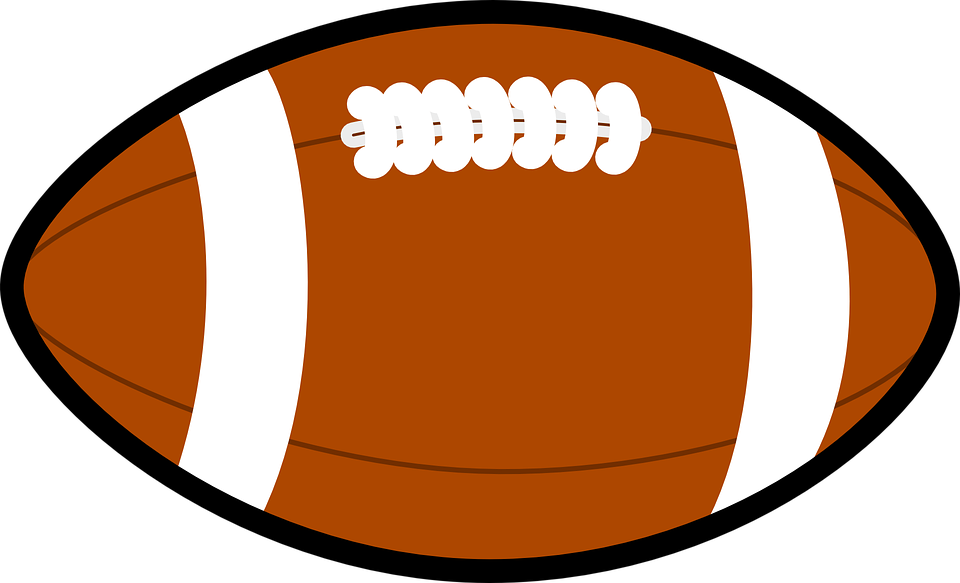
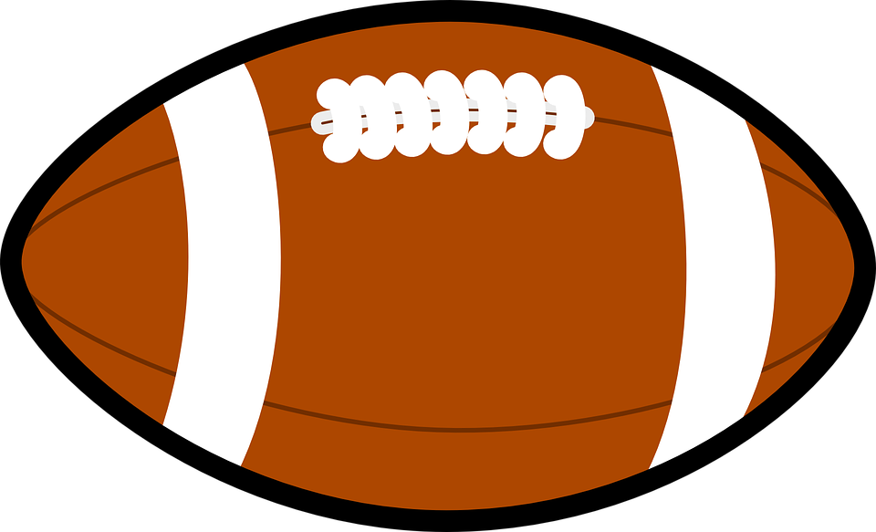
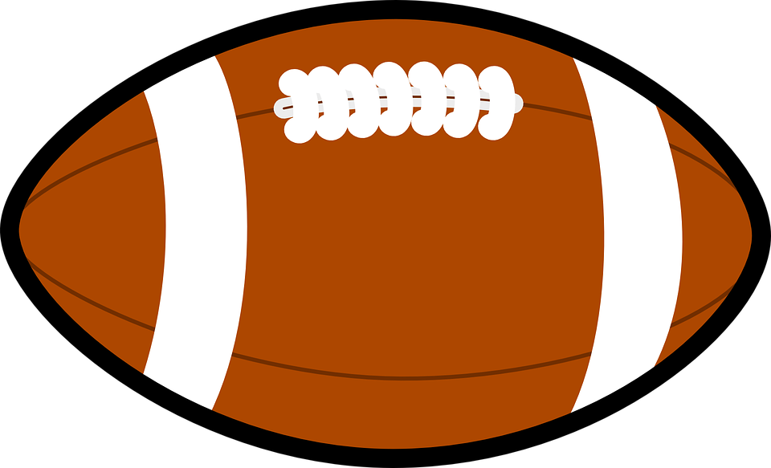
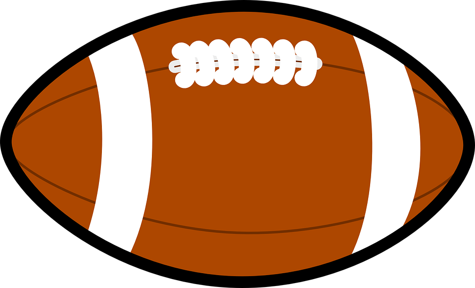

"To English-speaking countries outside America, terms like 'American football' and 'gridiron' were used instead of just football. Although there are some mentions of Native Americans playing football-like games, modern American football has its origins in the traditional football games played in the cities, villages and schools of Europe for many centuries before America was settled by Europeans. Early games appear to have had much in common with the traditional "mob football" played in England. The games remained largely unorganized until the 18th century, when intramural games of football began to be played. Organized varieties of football began to take form in 19th century in English public schools. According to legend, William Webb Ellis picked up the ball and ran with it during a school football match in 1823, thus creating a new style of play in which running with the ball predominated instead of kicking. Football soon began to be played at colleges and universities in the United States. "
SourceOn August 20, 1920, at a Hupmobile dealership in Canton, Ohio, the league was formalized, originally as the American Professional Football Conference, initially consisting only of the Ohio League teams, although some of the teams declined participation. One month later on September 17, the league was renamed the American Professional Football Association, adding Buffalo and Rochester from the New York league, and Detroit, Hammond (a suburban Chicago squad), and several other teams from nearby circuits. Only four of the founding teams finished the 1920 schedule and the undefeated Akron Pros claimed the first championship. Membership of the league increased to 22 teams – including more of the New York teams – in 1921, but throughout the 1920s the membership was unstable and the league was not a major national sport. On June 24, 1922, the organization, now headquartered in Columbus, Ohio, changed its title a final time to the National Football League.
Source